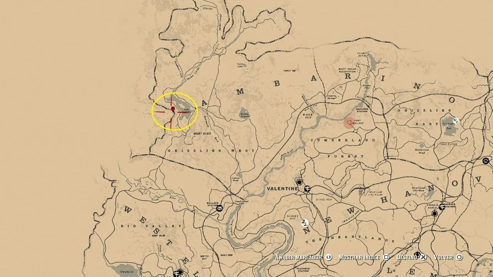
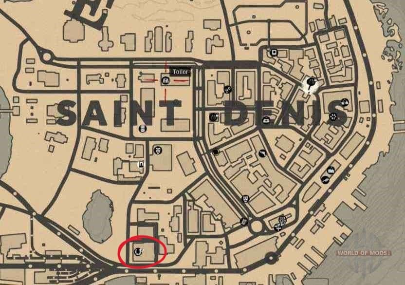
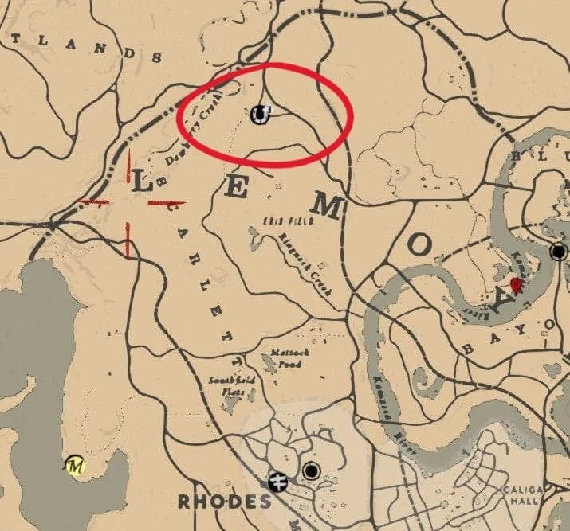
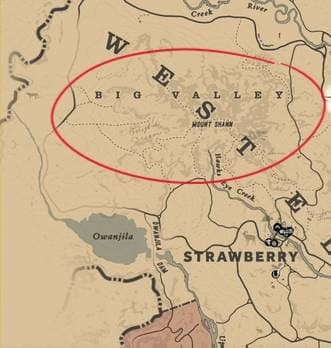
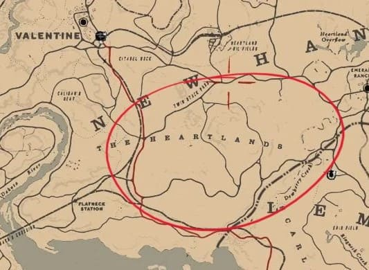

Top Mejores Caballos
Arabe:
Si quieres ir al grano, el mejor caballo salvaje que puedes capturar es el Caballo Árabe Blanco, también conocido en internet como el caballo legendario. Éste lo puedes capturar desde el Capítulo 2, también esta el Árabe Negro, que se consigue comprándolo en los establos de Saint Denis.
Categoría: Superior
Manejo: Élite
Salud: 5
Resistencia: 5
Velocidad: 6
Aceleración: 6
Ubicación en el mapa:
Árabe Blanco:
Árabe Negro:
Fox Trotter de Missouri:
Los fox trotter de Missouri son unos caballos versátiles y equilibrados. Pueden identificarse por su constitución media y musculosa, y su pelaje lustroso. Ambos pelajes, el champán ámbar y el pinto de manchas plateadas se pueden adquirir en un establo. Son muy valorados por su trote suave, lo que hace que sean fáciles de montar.
Además, su complexión fuerte y su gran resistencia hacen que sean unos magníficos caballos de trabajo. Destacan por su salud y velocidad.
Valor base: 950 $
Categoría: Carreras / Trabajo
Manejo: Estándar
Salud: 5
Resistencia: 6
Velocidad: 7
Aceleración: 5
Ubicación en el mapa:
Establo de Scarlett Meadows:
Turcomano Dorado:
Los turcomanos son caballos versátiles que aúnan características de los caballos de carreras y de guerra. Pueden identificarse por su constitución robusta pero flexible y su brillante pelaje. Ambos pelajes, el bayo oscuro y el dorado se pueden adquirir en un establo. Los caballos de esta raza son dóciles, aunque tienen fama de ser impacientes.
Destacan por su fantástica salud, su buena resistencia y su gran velocidad. Estos caballos versátiles son perfectos para la mayoría de las situaciones. El turcomano es un caballo versátil con unas peculiaridades que lo hacen perfecto para las carreras y el combate.
Valor base: 1050 $
Categoría: Superior
Manejo: Estándar
Salud: 6
Resistencia: 6
Velocidad: 6
Aceleración: 6
Ubicación en el mapa:
Establo de Saint Denis:
Purasangre:
Los purasangres son caballos de carreras. Pueden identificarse por su constitución atlética, largas patas y pecho oscuro. Los de pelaje bayo sangre y gris tordo se pueden encontrar en la naturaleza, mientras que los atigrados se pueden adquirir en un establo. Un espécimen de pelaje pardo oscuro también se puede descubrir.
Son conocidos por su gran velocidad y su agilidad, aunque pueden volverse torpes cuando se les exige demasiado. Su buena resistencia y aceleración los hacen perfectos para cabalgar distancias cortas. Los purasangres son conocidos por su velocidad y agilidad, lo que los convierte en unos caballos de carreras excelentes.
Categoría: Carreras
Manejo:Élite
Salud: 5
Resistencia: 6
Velocidad: 5
Aceleración: 5

Ubicación en el mapa:
Strawberry:
Valentine:
